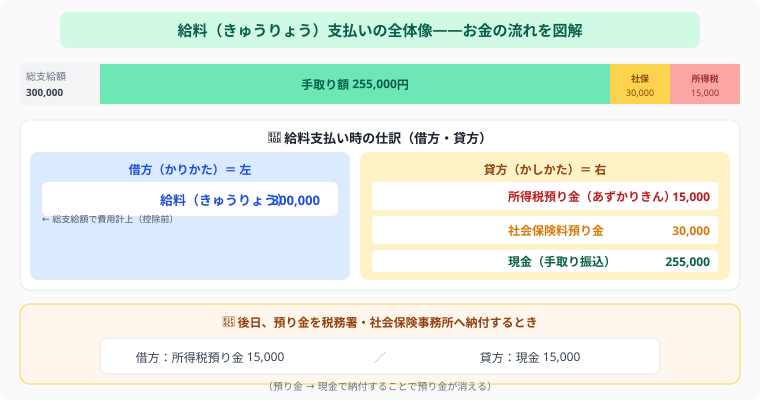

日商簿記3級 | 公開：2026年5月7日
給料の仕訳
源泉所得税・社会保険料の預り金を図解で完全解説
著者：大谷 一輝（大阪経済大学3回生・日商簿記1級勉強中）
給料の仕訳でポイントになるのは、「総支給額（額面）で仕訳する」という点です。会社は従業員の代わりに源泉所得税・社会保険料を一時的に預かり、後日まとめて国や健康保険組合に納付します。
給料支払いの全体像

▲ 上：総支給額の内訳（手取り＋控除） 中：借方・貸方の仕訳 下：後日の預り金納付仕訳
図解の上段を見てください。従業員の手元に届く「手取り額（255,000円）」は総支給額（300,000円）から源泉所得税と社会保険料を差し引いた金額です。簿記では費用（給料）は控除前の総支給額300,000円で計上し、控除した15,000円と30,000円は「預り金」として貸方に記録します。後日、会社がまとめて税務署・社会保険事務所へ納付するときに預り金を消します。
総支給額（額面）
¥300,000
（控除）源泉所得税
− ¥15,000
（控除）社会保険料（従業員負担）
− ¥30,000
手取り額（実際に振り込む金額）
¥255,000
控除分は「預り金」として会社が一旦立て替え、後日まとめて納付します。
① 給料を支払ったときの仕訳
例題
給料の総支給額 ¥300,000 のうち、源泉所得税 ¥15,000・社会保険料（従業員負担）¥30,000 を控除し、差引手取り ¥255,000 を当座預金から振り込んだ。
仕訳
給料300,000／預り金（源泉所得税）15,000
預り金（社会保険料）30,000
当座預金255,000
最重要ポイント
借方は必ず「給料 ¥300,000」（総支給額）。手取り額の ¥255,000 ではない！
正式な勘定科目名について：
試験では「預り金（源泉所得税）」を「所得税預り金」、「預り金（社会保険料）」を「社会保険料預り金」と表記する場合があります。どちらも同じ意味ですが、問題文の指示に合わせて使い分けてください。
② 預り金を納付したときの仕訳
預かった税金・社会保険料は、後日まとめて国や健康保険組合に納付します。
源泉所得税を税務署に納付したとき
預り金（源泉所得税）15,000／当座預金15,000
社会保険料を健康保険組合等に納付したとき
預り金（社会保険料）30,000／当座預金30,000
「預り金」は負債！
会社が従業員の代わりに一時的に持っているお金なので、いつか返す（納付する）義務がある負債です。給料支払い時に発生し、納付時に消えます。
③ 社会保険料の会社負担分
社会保険料は従業員だけでなく、会社も同額を負担します（労使折半）。会社負担分は「法定福利費」（費用）で処理します。
例題
社会保険料（従業員負担）¥30,000 と、会社負担分 ¥30,000 を合わせて当座預金から納付した。なお、従業員負担分はすでに預り金として処理済み。
納付時の仕訳
預り金（社会保険料）30,000／当座預金60,000
法定福利費30,000
従業員負担分と会社負担分を混同しない！
従業員負担分：給料から天引き→「預り金」で処理
会社負担分：会社が別途払う→「法定福利費」（費用）で処理
④ 従業員立替金（代わりに支払ったとき）
従業員が本来負担すべき生命保険料などを、会社が一時的に立て替えることがあります。この場合は「従業員立替金（資産）」で記録し、後日の給料支給時に差し引いて精算します。
例題（立替時）
従業員の生命保険料 ¥25,000 を会社が現金で立て替えた。
仕訳（立替時）
従業員立替金25,000／現金25,000
例題（給料支給時に控除）
給料 ¥340,000 を支給する際、立替額 ¥25,000 を控除し、残額 ¥315,000 を普通預金から振り込んだ。
仕訳（給料支給・立替精算）
給料340,000／従業員立替金25,000
普通預金315,000
「従業員立替金」vs「立替金」
相手が従業員の場合は「従業員立替金」、取引先など一般的な相手の場合は「立替金」を使います。どちらも資産（後で回収できる権利）です。
⑤ なぜ給料費用は総支給額で計上するのか
手取り額（差引支給額）ではなく、総支給額で給料を費用計上するのは「費用の総額主義」という会計原則によります。
もし手取り額で計上したら？（NG例）
総支給 ¥350,000・所得税 ¥25,000・社会保険料 ¥17,500・手取り ¥307,500 の場合
❌ （借）給料 307,500 ／（貸）普通預金 307,500
- 天引きした所得税 ¥25,000 が帳簿に現れない → 税務署への納付仕訳が書けない
- 会社の人件費コスト ¥350,000 が ¥307,500 と過少表示される
- 所得税・社会保険料の「預り金（負債）」が記録されない
正しい処理（費用の総額主義）
✅ （借）給料 350,000 ／（貸）所得税預り金 25,000
（貸）社会保険料預り金 17,500
（貸）普通預金 307,500
→「給料費用は総額」「天引き分は預り金（負債）」として全金額が帳簿に残る。
⑥ 総合例題：所得税＋社会保険料をまとめて処理
実務では所得税と社会保険料を同時に天引きします。1つの仕訳で処理できるよう練習しましょう。
例題
給料総額 ¥350,000 のうち、所得税 ¥25,000・社会保険料（従業員負担）¥17,500 を天引きし、手取り ¥307,500 を普通預金から振り込んだ。
給料支払時（3つを同時処理）
給料350,000／所得税預り金25,000
社会保険料預り金17,500
普通預金307,500
翌月①：所得税を税務署に納付
所得税預り金25,000／現金25,000
翌月②：社会保険料を年金事務所に納付（従業員分＋会社負担分の合計）
社会保険料預り金17,500／現金35,000
法定福利費17,500
納付先が2か所あることに注意！
所得税→税務署、社会保険料→年金事務所。社保は「従業員分＋会社負担分」の合計（35,000円）をまとめて納付します。
⑦ 取引先への立替金・預り金
給料以外の場面でも「立替金」「預り金」は出てきます。相手が従業員でなく取引先でも考え方は同じです。
例題①：取引先の運賃を立替え
取引先B社の運賃 ¥2,000 を現金で立替払いした。
例題②：取引先の売掛金を代わりに受け取り
取引先D社の売掛金 ¥50,000 を代わりに現金で受け取った。
受取時（預り金として記録）
現金50,000／預り金50,000
D社に返金したとき
預り金50,000／当座預金50,000
立替金 vs 従業員立替金の使い分け：
相手が従業員→「従業員立替金」、相手が取引先など→「立替金」。どちらも資産（後で回収できる権利）である点は同じです。
⑧ よくある間違い3パターン
❌ 間違い①：給料を手取り額で計上してしまう
❌ （借）給料 307,500 ／（貸）普通預金 307,500
✅ （借）給料 350,000 ／（貸）所得税預り金 25,000 ／ 社保料預り金 17,500 ／ 普通預金 307,500
❌ 間違い②：従業員の生命保険料を会社の「保険料」費用として計上してしまう
❌ （借）保険料 ／（貸）現金
✅ 従業員のための立替は「従業員立替金（資産）」→後で給料から控除して回収する
❌ 間違い③：取引先の売掛金を代わりに受け取ったとき「売掛金」で処理してしまう
❌ （借）売掛金 ／（貸）現金
✅ 他社のお金を預かっているので「預り金（負債）」→後でその会社に返す
⚔ Study Quest で学習を記録しよう
簿記3級の学習時間をRPG感覚で記録。試験日までの学習ペースをリアルタイムで確認できます。
無料で始める →
📋 まとめ：給料の仕訳 早見表
給料支払い（借方）給料（総支給額）を借方に記録
給料支払い（貸方）預り金（税金・社保）＋当座預金（手取り）
源泉所得税の納付預り金 ／ 当座預金
社会保険料の納付（全額）預り金＋法定福利費 ／ 当座預金
預り金の性質負債（後で納付する義務）
法定福利費の性質費用（会社負担の社会保険料）
従業員立替金資産｜従業員の保険料等を立替え。給料支給時に控除して精算
費用の総額主義給料費用は手取りでなく総支給額。天引き分は所得税預り金・社会保険料預り金（負債）